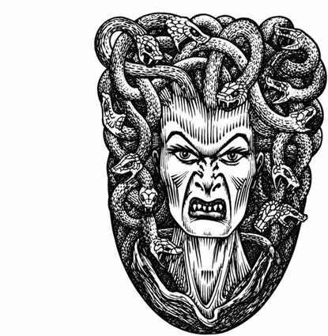

美杜莎 · Medusa
 |
|
美杜莎是令人憎恶的人形生物，居于阴暗洞穴中，偶尔外出觅食。它们会设法诱使人类直视自己的双眼。
美杜莎的目光能将 3 寸范围内的生物化为石头，除非对方通过对抗石化的豁免检定。若敌人避开目光，美杜莎便会冲上前，用头上如蝰蛇般的蛇发咬击受害者。此类攻击的距离只有 1 尺；被咬者必须通过对抗毒素的豁免检定，否则死亡。若美杜莎的目光被反射回来，它自己也会石化！美杜莎既会说自己的语言，也会说通用语。它们能看见星界与以太位面的生物，其石化目光在这些位面上与物质位面一样有效。
外观：美杜莎的身躯看起来匀称而近似人类，通常穿着人类服饰；然而她们面容可怖，蛇发不断蠕动，因此近距离（20 尺）便会暴露身份。美杜莎那双布满红丝、令人畏惧的眼睛，在 30 尺外仍清晰可见。